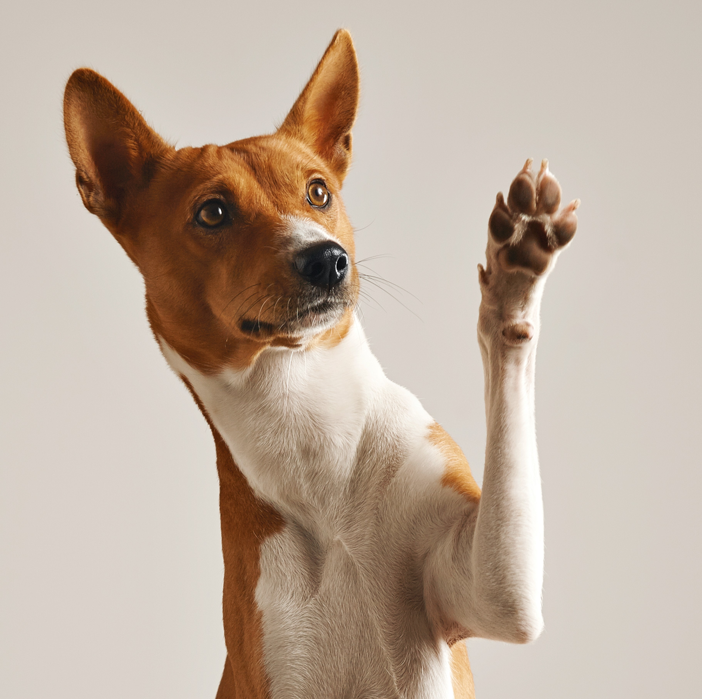

Seu novo melhor amigo
está à sua espera.
Navegue por nossa seleção de cães e gatos em busca de um lar amoroso.
Ver Animais

Navegue por nossa seleção de cães e gatos em busca de um lar amoroso.
Ver Animais
Ao adotar, você não apenas ganha um companheiro leal, mas também salva uma vida. Milhares de animais em abrigos aguardam por uma segunda chance. Faça a diferença na vida de um deles!
"O amor por todas as criaturas vivas é a mais nobre qualidade do ser humano." - Charles Darwin
Seja parte da nossa missão de encontrar um lar para cada pet. Juntos, podemos construir um mundo melhor para eles.
Começar a Adoção